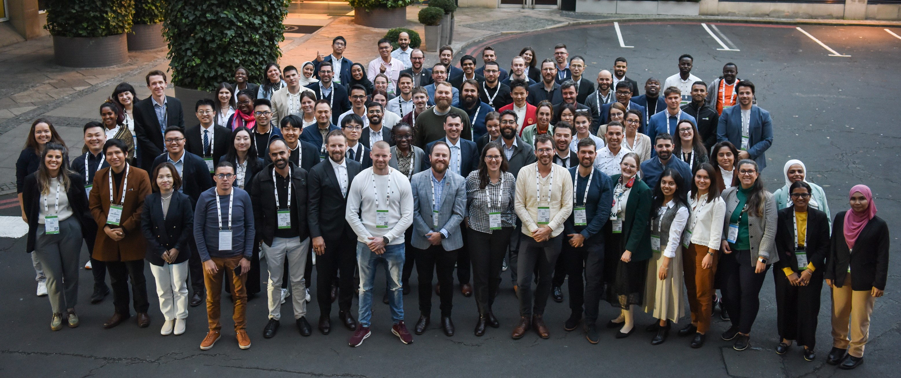

A week at the International Electrotechnical Commission
3rd November 2024I recently attended the annual International Electrotechnical Commission (IEC) General Meeting as a Young Professional. After a packed week of networking, workshops and talks I’ve come away with a hard-to-get insight into how the IEC works, how to get involved and what a career in international standards is like. I also know about five million new acronyms.
 Above: I'm there, right in the middle (look for the mustache) Click to open full-size.{kind=link}
Most technical people use standards regularly but few know how they are made. I used to regard standards as authoritative documents which simply exist, like an ancient manuscript penned by an unknowable author. Still, until recently I knew precious little about how international standards are managed. All that would change!
First, an introduction to me. I’m 28 and a Design Engineer dedicated to environmental challenges, currently living in Glasgow, UK. I work for Synaptec, a company making passive sensors for electricity grids possible at scale. In my previous role in the lighting industry I became an advocate for Remanufacturing used luminaires and spent nearly 4 years chairing a BSI sub-committee developing BS 8887-221:2025. Yes, 2025 is currently in the future – watch this space. Living in Glasgow my journey to the IEC GM, held this year in Edinburgh (UK), was shorter than most attendees’ jet-lag.
Excitement and nervousness
Working out what this week would be like was a challenge. I was emailed 13 documents, an agenda and instructions on how to use the IEC’s meeting registrations portal, a function-first website of pleasantly nostalgic design. I had a feeling of information overload but still didn’t really know what to expect: one word document contained a briefing for a role-play:
Impressive advances in artificial intelligence mean robots may become capable of replacing human beings in every task imaginable. What are the ethical implications of such a development? How do we prepare for such a future?
So, I went into Sunday evening feeling more than a bit nervous.
I check-in at my hotel and meet up with the other UK Young Professionals (that’s “YPs” in IEC parlance). Both are also design engineers and we got on instantly, finding a lot in common. I relax a bit, knowing at least I wouldn’t be alone all week!
The week’s events were strictly scheduled on our agenda and mostly held at a large hotel in a main “plenary” room and several smaller meeting rooms. Our first session is opened with a speech by the President of the IEC, Jo Cops, who sets the tone with a passionate introduction to the IEC and its work. There is some poignant history this year as the IEC’s first President in 1906 was Lord Kelvin, who gives his name to the SI unit of temperature; in turn derived from the river Kelvin flowing through Glasgow where he served as Professor of Natural Philosophy for 53 years.
With those rousing words in mind it’s time to break the ice – I’m given a name and set off to find them! Networking is not normally my idea of fun but there is no awkwardness as everyone dives in and I quickly fall into a pattern of “Nice to meet you, what is your job? Where do you live?” I speak to people from New Zealand, South Korea, Singapore, Turkey, China and Sweden.
Why are we 100 young professionals from across the globe generously assembled here? The program aims to address two challenges faced by the IEC; lack of awareness and training for standards development and that the IEC’s contributors (referred to as “experts”) are, well, getting older. In the words of one speaker “there are a lot of old people (long pause), yeah”. So, the logic is to find willing YPs, teach them as much as possible and induct them into the IEC community.
This is made clear as we are told "you are the future of standardisation". While it sounds very grand it does resonate with me; I got involved with standardisation because I wanted to contribute to future best practice. Jo ended the address with "let us work together to create a world that is not only technologically advanced but inclusive, sustainable and resilient". It’s no small mission and he says it with complete conviction. I’m on board!
let us work together to create a world that is not only technologically advanced but inclusive, sustainable and resilient
Jo Cops, IEC President
A crash course
The week starts in earnest as we meet in the plenary room. There’s a range of experience in the room - standards users, makers and conformity assessors - but all are keen to learn and over the course of the day we hear from previous YPs and standards leaders about how the IEC operates and how we can get involved.
From the talks I learn that the international standards ecosystem follows carefully defined rules and processes. The IEC sits at the international level for electro-technical systems alongside ISO (general) and ITU (telecommunications), with CEN and CENELEC sitting below IEC at the European level. Finally, standards reach the national certifying bodies like BSI (UK), DIN (Germany), UL/ANSI (USA), etc. Interestingly, there’s a big push for standards to originate at the international level (guided by the Frankfurt agreement) with national input and interpretation, preventing barriers to trade, unnecessary duplication or difference: take for example, the plethora of general-purpose wall-sockets around the world.
So, say we want a new standard. First, we must establish a need and gain enough buy-in. The work is assigned to the relevant Technical Committee (“TC” – there are over 100). Each country nominates to act as either Participant or Observer, with Participants nominating experts who will draft the standard itself, which is finally released to each National Committee to be distributed to domestic stakeholders for consideration.
When reviewing the draft each National Committee gathers then advocates for the views of their domestic stakeholders to ensure the finished standard is fit-for-purpose around the world. This culminates in voting, with strict quotas for approval – otherwise the standard goes back through the loop.
Lessons in diplomacy: Consensus need not imply unanimity
It turns out that working as a delegate for your National Committee is less about being a technical expert and more about collaboration and dispute resolution. We hear from Walter Zoller, previously a YP and now the Secretary for the Smart Manufacturing committee. He tells us that not only will your international counterparts have different stakeholders and requirements, you must also collaborate through a language barrier (IEC meetings are conducted in English), time difference and cultural factors. Walter emphasises the importance of bearing all this in mind to facilitate collaboration – especially when there are stiff differences in opinion!
The objective of all this negotiation is to gain consensus, which is itself defined (obviously):
consensus
general agreement, characterized by the absence of sustained opposition to substantial issues by any important part of the concerned interests and by a process that involves seeking to take into account the views of all parties concerned and to reconcile any conflicting arguments
Note 1 to entry: Consensus need not imply unanimity.
So, after attempting to resolve disagreements and provided that no party is providing sustained opposition there is consensus. Annette Frederiksen, another YP alumnus and today a member on the steering committee of DKE, points out that achieving consensus late at night after exhausting your committee into submission is, wait no sorry is not a valid strategy.
If this sounds like international diplomacy that’s because it, well, is. We learn that standards and legislation/governance have a close relationship, one which varies from region to region. It’s important that governments utilise the value in standards, but standards themselves have no legal power and are not a substitute for legal enforcement.
Consulting Final_agenda_2024 IEC_YP_workshop.pdf takes me to a meeting of the Standardization Management Board (SMB) which perfectly embodies my imagined “international organisation meeting”. Held in an exhibition hall and live-streamed from several camera angles, delegates sit around tables arranged in a huge square, each with a microphone, water and laptop. The SMB’s objective is to monitor hot topics (“green” hot, not “red” hot, quips the chairman who I quickly decide is very cool – yes, I said it) and thus direct the standardization effort accordingly.
The SMB have prepared presentations on this year’s hot topics: 24/7 carbon free, zero-carbon building and electric aircraft. Each theme involves any number of technological developments, each requiring the guiding support of standards. After the presentations they take questions from the YPs; with my heart pounding, I introduce myself and ask whether consideration has been given to the role that circular economy plays within zero-carbon buildings. The answer is yes, and that TC 111 (which leads work on circular economy) will play a role in that regard.
Experts in the room
So how do the experts write the clauses and provisions that exert so much influence? Because my employer Synaptec develops passive electricity grid sensors I registered to observe a meeting for TC 57, “Power systems management and associated information exchange”. TC 57 oversees a standard (IEC 61850) which defines the communication protocol my company uses to ensure our products can speak to other substation equipment.
I find the TC 57 experts to be just that – expert. Working in industry or academia, each expert knows their domain fully and thus by working together they are able to establish standards which are relevant, accurate and impactful. Later in the week I meet the Chair of TC 114 on Marine Energy, Jonathan Colby. In a small group he tells us about his career and standards journey; the importance of reflection, ambition and mentorship. His dedication and enthusiasm is obvious and he takes his role extremely seriously, carefully preparing for meetings and maintaining close contact with delegates.
I see a more relaxed side to the IEC delegates and experts when the General Meeting’s ~1,200 attendees gather at the end of the first day in a massive but artistically lit exhibition hall, well-dressed and catching up with colleagues old and new. I think for a while about the sheer amount of expertise in that room – there is a special sort of energy and excitement; confident and purposeful.
Following the experts’ example, us YPs had a chance to role-play as experts and stakeholders in a game of standard-development; influencing a made-up standard from the perspective of our assigned roles and countries. Now, this was serious work, but at the same time if you’ve never heard a sincere debate over flying apparatus for electronic baby robots, or for that matter what, exactly, a baby is then well, I have one up on you.
Time for change
I’ve alluded to the IEC’s staid digital tools, but the world’s electrotechnical standards organisation is pushing hard on modernizing. Word documents with literally thousands of comments organised into an 8-column table? Spending hours searching for relevant standards and clauses? Not for long – and I’m given temporary login details to preview and even influence two of the digital tools being introduced by the IEC: “Online Standards Development” (OSD) and the IEC SMART White-Label.
OSD is a document collaboration tool specifically designed for the IEC’s workflow – it’s intuitive, well-laid out and robust. Having done my standards work in increasingly horrifying word documents (it’s bad when there’s more markup than text itself!), while I’m trying it out I think to myself wow, I could really see myself using this.
SMART standards are something else entirely. Our workshop facilitator is bubbling with excitement: in the future, he told us, technology will access standards directly and we will move beyond the limitations of PDF documents. AI will provide us the standards, clauses and requirements applicable to our needs instantly – thus necessitating a totally new business model. My group is asked to develop a presentation that will pitch our ideas for this transformation.
Making our contribution
Over the week, between other meetings and activities, I meet up with my group to work on our presentation. We start slowly while still getting to know each other and after a while I decide to try and facilitate. We rearrange the seating, set up a screen, nominate a note taker and start selecting concepts methodically – now we are making progress, but time is tight! By the end of our last session everyone stays behind to wrap up and go over the slides.
A break in the agenda comes in the form of a visit to the National Robotarium; a brand new institute already packed full with startups. The institute has robotics experiments everywhere ranging from human interaction, industrial applications and healthcare. An undeniable “wow” moment was interacting with "Ameca" which used a chatgpt AI model combined with facial gestures to communicate naturally with the people in the room, even speaking Chinese when prompted. The takeaway is clear to me; robotics and AI are fast moving into the everyday and we need robust and international standards to guide their design and use. Will some of the YPs here today go on to contribute towards those societal objectives?
With the presentations (mostly) complete and friendships starting to form, Thursday night is a real party; there’s a live band and after food and wine things get into full swing with dancing, singing and even limbo under clipped-together lanyards. When the venue closes we go from bar to bar - trading stories about work and life across our different countries. I was conscious that cultural differences came into play here – the music was western, not everyone was drinking due to personal or religious preference and loosening up with business acquaintances was perhaps uncomfortable to some. Still, it’s early in the morning when I go back to my hotel room, mind buzzing from conversation (and drinks).
An unforgettable experience
With Friday morning came the General Assembly itself – where the IEC makes decisions, conducts elections and turns the page on the departed year into the next. It also provided an opportunity for our presentation to be delivered to a massive and receptive audience (no pressure!). For me this was the end of my stay in Edinburgh though as I had other travel plans, but it was not the end of the experience – I keep up-to-date with a steady stream of messages into the by now highly active WhatsApp group chat, including the election of three “YP leaders” representing Asia & the Middle East, Africa & Europe, and America & Oceania. Congratulations to Majid, Fatoumata and Luiz!
Now that I’ve had time to reflect and catch up on sleep, how will I remember the IEC GM? Once I got over my initial nerves I had a great time meeting people from across the world, each with unique and fascinating experiences and (I hope!) some of those will go on to become lifelong friends and colleagues. I do believe that international standards have a vital role to play as we transition to a sustainable society - and by providing a common language and opportunity for collaboration, can only help reduce division and rebuild trust.
It has certainly been an unforgettable experience that has opened my mind to international standards and the inspiring individuals who contribute to them. But, more than that, I now feel a connection to that community, one which is international in makeup and strives for the precious qualities of collaboration, openness and improvement. I don’t know exactly where this will lead but I have some good ideas and a whole lot of new connections!